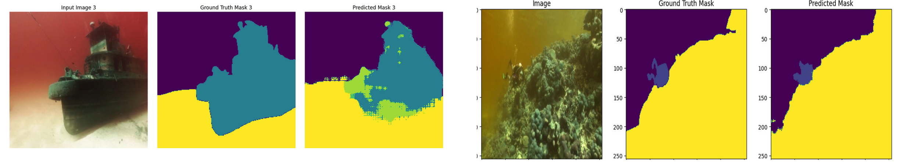

Underwater Image Segmentation

Developed a robust semantic segmentation pipeline for underwater imagery, addressing challenges like turbidity and color distortion.
- Pretrained using SimCLR on the UFO dataset with advanced data augmentation to capture underwater image features.
- Leveraged SimCLR's contrastive loss to achieve minimum distance between positive features in feature space.
- Exploited U-Net's Encoder-Decoder architecture for fine-tuning on the SUIM dataset.
- Achieved 0.70 pixel accuracy (baseline: 0.67) using a hybrid loss function combining Dice loss (attention to thin features) and Cross-Entropy loss.